Практичний досвід · журнал «ДентАрт» 2013 №3 (72)
Удосконалена ізоляція післяопераційних ран — пародонтальна пов'язка Резо-Пак
ADVANCED ISOLATION OF ORAL SURGICAL WOUNDS WITH PERIODONTAL BANDAGE RESO-PAC
Рани в порожнині рота характеризуються надзвичайно гарною проліферацією і швидким самовідновленням. Незважаючи на це, в деяких випадках потрібна ізоляція ран від порожнини рота для запобігання мікробній колонізації. Діапазон таких клінічних випадків широкий — від звичної екстракції зуба до відкритої клаптевої хірургії, закриття і стабілізації швів. Такі ж самі вимоги ставляться до лікування виразкового гінгівіту і періімплантиту. Пов'язка може ставати носієм лікарського засобу, коли це необхідно. Більшість пародонтальных пов'язок має в основі оксид цинку, евгенол і/або полімери метакрилату, які забезпечують механічну фіксацію пов'язки в ділянці застосування. Класичні пов'язки вимагають змішування різних компонентів безпосередньо перед накладанням і контактом зі слизовою оболонкою. Величезний мінус таких твердих пов'язок у тому, що їх складно видаляти. Це стає причиною дискомфорту для пацієнта і потенційною причиною болю, а то й повторного травмування рани при знятті пов'язки. Фізіологічна кровотеча зупиняється впродовж 5 хвилин, тоді як для формування надійного захисту рани організмові необхідно близько 90 хвилин. На жаль, це наукове твердження не поширюється на рани слизової оболонки, де слина обполіскує і вимиває все. Щоб забезпечити загоєння хірургічних ран порожнини рота, адекватна пародонтальна пов'язка повинна мати такі якості:
- Добру саморозчинність, щоб усунути необхідність фізичного видалення пов'язки з рани.
- Утримання на поверхні до 30 годин.
- Адгезію, а не тільки механічне прилипання, оскільки тільки міцне зчеплення з тканинами забезпечує повну ізоляцію від середовища порожнини рота і їжі.
- Еластичність і м'якість матеріалу під час нанесення і моделювання пов'язки.
- Комфорт для пацієнта, нейтральний запах і смак матеріалу пов'язки.
Істотний прогрес і свого роду революція в галузі пародонтальних пов'язок сталися з розробкою нового рецепту. Резо-Пак/Reso-Pac цілковито відрізняється від звичних пародонтальных пов'язок, оскільки це гідрофільний матеріал з гарними адгезивними властивостями на слизовій оболонці. В основу пов'язки входить целюлоза, що містить екстракт мірри та ароматичні смоли, отримані з дерева Комміфора мірра. Вона має антисептичні, в'яжучі та кровоспинні властивості і не викликає алергійних реакцій. Пов'язка готова до використання і дуже проста в роботі, немає необхідності змішування компонентів — це робить матеріал унікальним. Необхідно тільки змочити рукавички, скачати матеріал і наклеїти на рану або шов.Через 3 хвилини матеріал набуває консистенції желатину. Пов'язка абсолютно еластична і не змінює свою консистенцію навіть після накладання у порожнині рота, що запобігає механічному травмуванню і не впливає негативно на кровообіг слизової оболонки. Пов'язка прилипає як на мокру слизову оболонку, так і на ту, що кровоточить, і зберігається там аж до 30 годин, повністю ізолюючи ділянку від зовнішнього середовища. Процес загоєння відбувається набагато швидше, оскільки рана або шов захищені від рухів язика у роті і потрапляння їжі. Пов'язка чудово зв'язується з емаллю зубів, кістковою тканиною, реставраціями і швами. Немає необхідності зняття пов'язки, оскільки вона сама повністю розсмоктується максимум через 3 дні без залишку на слизовій оболонці (термін залежить від зовнішнього впливу). У клінічній практиці зазвичай досить одноразового застосування матеріалу, щоб покрити рану фібрином. У складних випадках, де період зцілення затягується, пов'язку необхідно накласти повторно. Резо-Пак може бути використаний як носій лікарського засобу (антисептика, антибіотика та ін.), гемостатика або препарату фтору, це вирішальна перевага при імплантації, протезуванні і в пародонтології.
Широкий спектр використання пов'язки Резо-Пак:
- ізоляція ран у затятих курців;
- додатковий захист ран у пацієнтів з геморагічним діатезом;
- захист швів (наприклад, у разі хірургічного закриття співустя верхньощелепної пазухи і порожнини рота);
- захист крайового пародонту після гінгівектомії;
- адаптація тканин у клаптевій хірургії;
- після глибокого кюретажу;
- при лікуванні гінгівіту, ясенних кишень та періімплантиту у поєднанні з призначеними процедурами;
- лікування гіперчутливості пришийкових ділянок зубів у поєднанні з фтором;
- захист шийок зубів після фторування;
- закриття пересаджених ділянок м'яких тканин;
- тимчасова або постійна підкладка під знімні протези;
- закриття операційної ділянки після кортикотомії;
- захист пересадженої кісткової тканини, заміна кістки або мембрани після зняття швів.
Клінічний випадок
Пацієнт, 25 років, після вертикального перелому кореня верхнього лівого центрального різця. Після видалення кореня одномоментно було встановлено імплантат. Через три місяці проведено повторну імплантацію через незадовільні функціональні й естетичні результати первинної операції, після якої залишився дефект кістки класу 5 за класифікацією Шерера і Фейєра (1999). Використовувався внутріротовий кістковий трансплантат того ж пацієнта з ретромолярної ділянки. Ушкоджена ділянка заповнена власною кістковою тканиною і штучним кістковим матеріалом. Потім була встановлена колагенова мембрана. На третій день після операції з піднебінної і вестибулярної поверхонь було видно, що м'яка тканина затягнула вже третину кісткового трансплантата. На сьомий день були зняті шви. Через день при обстеженні було виявлено, що краї рани розійшлися, і розпочато кисневу терапію, яка проводилася щодня впродовж 7 днів, але не привела до успіху. На 14-й день після операції на рану уперше було накладено пов'язку Резо-Пак, яка оновлювалася через день упродовж 10 днів. Операційне поле затягнулося епітеліальною тканиною і була встановлена тимчасова реставрація без функціонального навантаження.
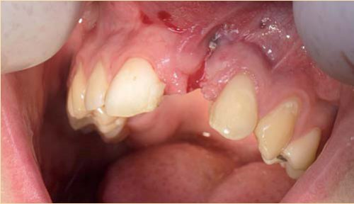
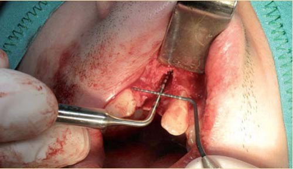
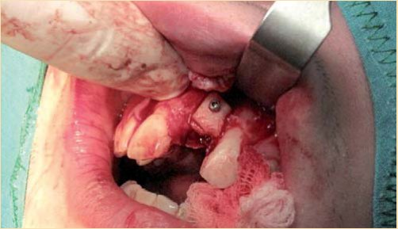
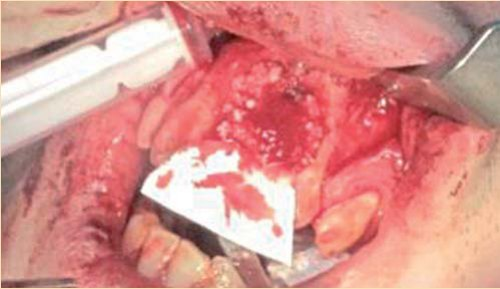
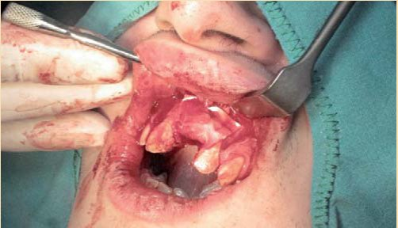
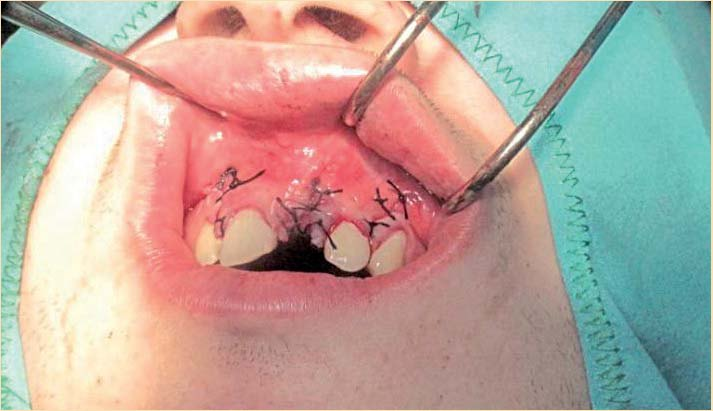
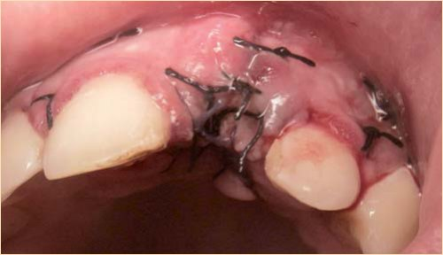
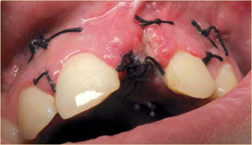
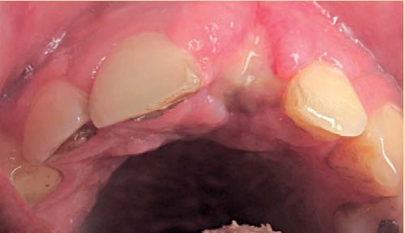
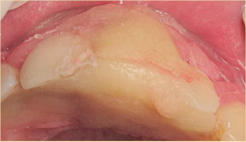
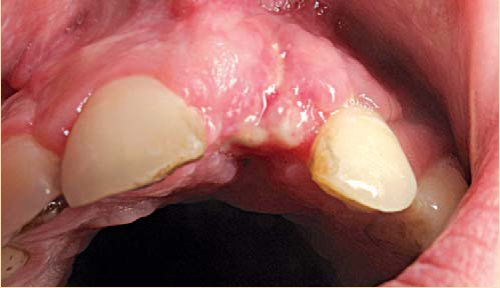
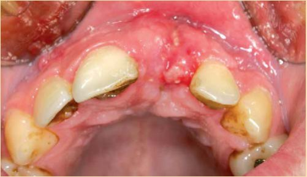
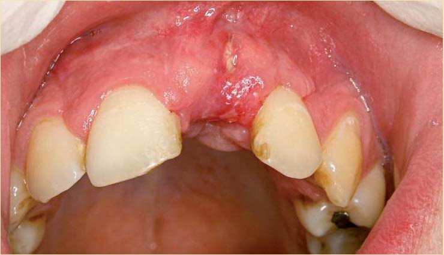
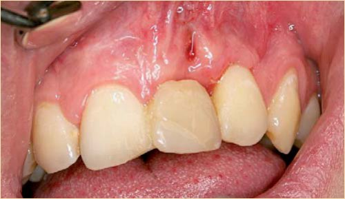